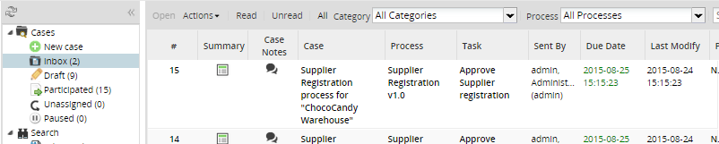
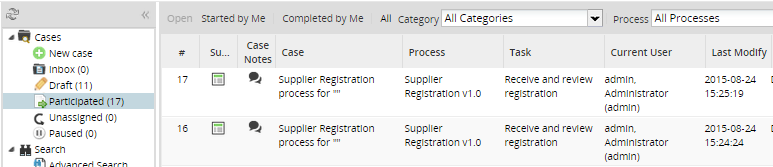

Solr Server Description
The Solr server is used as an alternative to display the Inbox, Draft, Participated, unassigned and advanced search. The views are going to be displayed consulting the Solr index and completing the data using the database. The Solr server index the Application records of ProcessMaker. The Solr server must be maintained in synchronization with the database.
The purpose to use Solr is the additional functionality to search in the application data (APP_DATA) and the faster response of the index to search queries. It is ideal for ten thousand users defined on ProcessMaker.
Note: It's important to mention that for the moment on a Solr installation Case List Builder plug-in doesn't work.
Solr Schema
Basically, the Solr server is a Data Base that allows data storage according to a schema definition. The schema could be understood as a Data Base table. The schema is a xml file which contains the fields definition that will be used to index data. The following code is the Solr schema for ProcessMaker. The Solr server defines the fields that are going to be stored and indexed in a file called schema.xml. The following are the fields that are going to be stored in the Schema:
<schema name="pmos2" version="1.5">
<fields>
<field name="APP_UID" type="string" indexed="true" stored="true" required="true"/>
<field name="APP_TITLE" type="text_general_rev" indexed="true" stored="true" required="true"/>
<field name="APP_PRO_TITLE" type="text_general_rev" indexed="true" stored="true" required="true"/>
<field name="DEL_MAX_PRIORITY" type="tlong" indexed="true" stored="true" required="true"/>
<field name="APP_NUMBER" type="tlong" indexed="true" stored="false" required="true"/>
<field name="APP_STATUS" type="string" indexed="true" stored="false" required="true"/>
<field name="PRO_UID" type="string" indexed="true" stored="false" required="true"/>
<field name="APP_CREATE_DATE" type="tdate" indexed="true" stored="false" required="true"/>
<field name="DEL_LAST_UPDATE_DATE" type="tdate" indexed="true" stored="false" required="true"/>
<field name="DEL_LAST_INDEX" type="tlong" indexed="true" stored="true" required="true" multiValued="true"/>
<field name="APP_ASSIGNED_USERS" type="string" indexed="true" stored="false" required="false" multiValued="true"/>
<field name="APP_ASSIGNED_USERS_READ" type="string" indexed="true" stored="false" required="false" multiValued="true"/>
<field name="APP_ASSIGNED_USERS_UNREAD" type="string" indexed="true" stored="false" required="false" multiValued="true"/>
<field name="APP_DRAFT_USER" type="string" indexed="true" stored="false" required="false"/>
<field name="APP_PARTICIPATED_USERS" type="string" indexed="true" stored="false" required="false" multiValued="true"/>
<field name="APP_PARTICIPATED_USERS_STARTED" type="string" indexed="true" stored="false" required="false" multiValued="true"/>
<field name="APP_PARTICIPATED_USERS_COMPLETED" type="string" indexed="true" stored="false" required="false" multiValued="true"/>
<field name="APP_UNASSIGNED_USERS" type="string" indexed="true" stored="false" required="false" multiValued="true"/>
<field name="APP_UNASSIGNED_GROUPS" type="string" indexed="true" stored="false" required="false" multiValued="true"/>
<field name="APP_PAUSED_USERS" type="string" indexed="true" stored="false" required="false" multiValued="true"/>
<field name="text" type="text_general" indexed="true" stored="false" multiValued="true"/>
<dynamicField name="*_i" type="int" indexed="true" stored="false"/>
<dynamicField name="*_is" type="int" indexed="true" stored="false" multiValued="true"/>
...
</fields>
Where:
- APP_UID: Application identifier.
- APP_NUMBER: Application number.
- APP_STATUS: Application status. (DRAFT, TODO, COMPLETED)
- PRO_UID: Process identifier.
- APP_TITLE: Application title. (The title is stored with the default language “en”)
- APP_PRO_TITLE: Process title. (The title is stored with the default language “en”)
- APP_CREATE_DATE: Application creation date.
- DEL_LAST_UPDATE_DATE: The most actual date of delegation. The date of the last delegation. The field
DEL_DELEGATE_DATEinAPP_DELEGATIONtable is used to calculate this field. - DEL_MAX_PRIORITY: The highest priority of all the delegations of the application that are open. If the case is closed or completed the last priority is used. The priority is defined in the field
DEL_PRIORITYof theAPP_DELEGATIONtable. - APP_ASSIGNED_USERS: Multi-value field used to store the list of assigned users to the application. The list of users that have an assigned case in the application.
- APP_ASSIGNED_USERS_READ: Multi-value field used to store the list of assigned users to a case that is already read. This value is defined when the
DEL_INIT_DATEis not null in theAPP_DELEGATIONtable. - APP_ASSIGNED_USERS_UNREAD: Multi-value field used to store the list of assigned users to a case that didn't read yet the case. This value is defined when the
DEL_INIT_DATEis null in theAPP_DELEGATIONtable. - APP_DRAFT_USER: Field used to store the user, that created the case(application) and didn't delegate the case to other person yet. The
APP_STATUS == 'DRAFT'condition is used. - APP_PARTICIPATED_USERS: Multi-value field used to store the list of users that participated in the case(application). Only the user identifier is search in the application.
- APP_PARTICIPATED_USERS_STARTED: Multi-value field used to store the list of users that participated in the case(application). The user must have created the first delegation. (User identifier and
DEL_INDEX == 1are used to search these users). - APP_PARTICIPATED_USERS_COMPLETED: Multi-value field used to store the list of users that participated in the case(application). The case must be completed. (User identifier and
APP_STATUS == 'COMPLETED'are used to search these users). - APP_UNASSIGNED_USERS: Multi-value field used to store the list of users that can select the case to work on it. Self service list of users.
- APP_UNASSIGNED_GROUPS: Multi-value field used to store the list of groups that can select the case to work on it. Self service list of groups.
- APP_PAUSED_USERS: Multi-value field used to store the list of users that paused their assigned case or task. (Not implemented yet)
All the variables that have a value defined in the Application are included in the index as dynamic fields.
- <uniqueKey>APP_UID</uniqueKey>
- <defaultSearchField>text</defaultSearchField>
- <solrQueryParser defaultOperator="OR"/>
- <copyField source="APP_TITLE" dest="text"/> <copyField source="APP_PRO_TITLE" dest="text"/> <copyField source="APP_STATUS" dest="text"/> <copyField source="APP_NUMBER" dest="text"/>
- <types> <fieldType name="string" class="solr.StrField" sortMissingLast="true" />
- <fieldType name="boolean" class="solr.BoolField" sortMissingLast="true"/>
- ....
The main tag is <fields> which defines the schema fields. I.e.: <field name="APP_UID" type="string" indexed="true" stored="true" required="true"/>
The field APP_UID has the following characteristics:
- type="string": it’s a string type field
- indexed="true": this is included in the index as well, it means that you can do searches with this field.
- stored="true": the field is stored in Solr, it means that you can return the original value that was stored.
- required="true": the field is required, it means that cannot be null.
<field name="APP_NUMBER" type="tlong" indexed="true" stored="false" required="true"/>
APP_NUMBER field has this characteristics:
- type="tlong": tlong Type (types are defined forward)
- indexed="true": this is included in the index as well, it means that you can do searches with this field.
- stored="false": the field is not stored in Solr, it means that you cannot return the original value that was stored.. i.e. APP_NUMBER=9933 the value is not indexed in Solr but is not possible to return 9933 from Solr, you will have to do a search of this value in the APP_UID field. This needs to be done in order to keep the server efficiency, then less data stored in index the less RAM need, and less time for re indexation
- required="true": the field is required, it means that cannot be null.
<dynamicField name="*_i" type="int" indexed="true" stored="false"/>
This type of field is a dynamic type, with this definition the following fields can be stored dynamically:
- phonenumber_i
- age_i
- height_i
- shoesize_i
- etc..
These fields allow you to store data dynamically. The dynamic fields are used to store in App_Data data from each case.
<uniqueKey>APP_UID</uniqueKey>: This setting is important and indicates which field is used as a registration key. Mapping a database would be as the field which is primary key.
<defaultSearchField>text</defaultSearchField>: This setting indicates which field is used to perform searches by default, in this case the text field. Is used when you do not specify a specific field to make a search (explanation below).
<solrQueryParser defaultOperator="OR"/> It defines which operator is used by default in order to search using one or more criteria
<copyField source="APP_TITLE" dest="text"/>
<copyField source="APP_PRO_TITLE" dest="text"/>
<copyField source="APP_STATUS" dest="text"/>
<copyField source="APP_NUMBER" dest="text"/>
It is used to copy the contents of one field to another, it is copying the contents of multiple text fields to the field.
<types>
<fieldType name="string" class="solr.StrField" sortMissingLast="true" />
Then comes the definition of the types of data that supports the schema to define the fields. It is recommended to leave this setting unchanged (Solr advanced topic).
Mapping between the structure of a database table and a schema in Solr:

Architecture
The Solr 4.0 Implementation in PMOS objetive is to provide a indexation server, that allows to run indexed searchs on stored data in cases (APP_DATA). Aditionally, this server can be used to see the cases list in ProcessMaker(Lists: Inbox, Draft, Participated, Unassigned and advanced search) in order to improve this lists performance.

Solr’s logic is the following:
- The Browser client requires ProcessMaker server to show the cases lists in Inbox.
- The ProcessMaker server query Solr for the list that needs to be show, depending on pagination conditions, text to search, current user filter, and other filter selected by the user to search the cases information on APP_DATA.
- The Solr server return the cases ID’s to be shown according the (list APP_UID).
- The ProcessMaker server completes the cases information querying the Data Base. For example, it completes the process name, the task name, the initial date, etc. etc.
Finally, the ProcessMaker server return the filtered list to the Browser user.
Solr 4.0 Installation on Tomcat
In order to have Solr integrated successfully, it is required to install Solr 4.0
You’ll find the server requirement.
In order to use Solr, we recomment to have a Enterprise Edition plugin installed.
| No | Step |
|---|---|
| 1 | Install JDK: For tomcat 7 is required JDK 1.6 or superior. |
| 2 | Tomcat 7 Installation: Generally tomcat 7 is install in /usr/share/tomcat7 #set initial memory requirements<br>
|
| 3 | Create the following folder structure:
|
| 4 | Copy in to the recent created folders the next files: This files must be re distributed with the Solr Implementation for ProcessMaker. |
| 5 | The files has the following content: Add Solr cores or instances that you want in this file, every instance must have it’s own folder: <?xml version="1.0" encoding="UTF-8" ?> <solr persistent="true" sharedLib="lib" > <cores adminPath="/admin/cores"> <core name="workflow" instanceDir="workflow" /> </cores> </solr> |
| 6 | Configure tomcat to start Solr application:
<Context docBase="/opt/solr/solr.war" debug="0" crossContext="true" > <Environment name="solr/home" type="java.lang.String" value="/opt/solr" override="true" /> </Context> |
| 7 | With this steps, Solr in installed and configured to work with ProcessMaker. For server Access go to: |
Modified Files - deployment
The following files must be added in ProcessMaker version 2.0.45. However, in ProcessMaker version 2.5.1 files are included.
| No | Path | File |
|---|---|---|
| 1 | class.AppSolr.php class.solr.php class.seachindex.php |
<INSTALL-DIRECTORY>/workflow/engine/classes/ |
| 2 | AppSolrQueue.php FacetInterfaceResult.php SelectedFacetGroupItem.php Base.php FacetItem.php SolrQueryResult.php |
<INSTALL-DIRECTORY>/workflow/engine/classes/entities/ |
| 3 | reindex_solr.php verify_solr.php |
<INSTALL-DIRECTORY>/workflow/engine/bin/ |
| 4 | class.fileCache.php | <INSTALL-DIRECTORY>/workflow/engine/classes/ |
| 5 | AppSolrQueue.php AppSolrQueuePeer.php |
<INSTALL-DIRECTORY>/workflow/engine/classes/model/ |
| 6 | AppSolrQueueMapBuilder.php | <INSTALL-DIRECTORY>/workflow/engine/classes/model/map/ |
| 7 | BaseAppSolrQueue.php BaseAppSolrQueuePeer.php |
<INSTALL-DIRECTORY>/workflow/engine/classes/classes/model/om/ |
Modified files list:
| No | Path | File |
|---|---|---|
| 1 | proxyCasesList.php casesMenuLoader.php |
<INSTALL-DIRECTORY>/workflow/engine/methods/cases/ |
| 2 | class.system.php -> funcion solrEnv | <INSTALL-DIRECTORY>/workflow/engine/classes/ |
| 3 | schema.xml | <INSTALL-DIRECTORY>/workflow/engine/config/ |
| 4 | schema.sql | <INSTALL-DIRECTORY>/workflow/engine/data/mssql/schema.sql |
| 5 | schema.sql | <INSTALL-DIRECTORY>/workflow/engine/data/mysql/schema.sql |
| 6 | casesList.js | <INSTALL-DIRECTORY>/workflow/engine/templates/cases/ |
| 7 | class.case.php | <INSTALL-DIRECTORY>/workflow/engine/classes/ |
| 8 | class.memcached.php | <INSTALL-DIRECTORY>/workflow/engine/classes/ |
Solr Activation in ProcessMaker
Once Solr is installed, we have to configure ProcessMaker to use this server.
Since every workspace has it’s own Solr instance, the ProcessMaker configuration must be done for every workspace that will use solr instance in the following file.
-
<INSTALL-DIRECTORY>/shared/sites/workflow/env.ini
-
This is the content of the file:
- solr_enabled=1
- solr_host=http://[ip_tomcat:port_tomcat]/solr/
- solr_instance=[workspace_name]
To let ProcessMaker used Solr implementation, the file
- <INSTALL-DIRECTORY>/shared/sites/workflow/env.ini
Must exists with the 3 parameters.
If you want to disable solr, you have to delete the configuration file (env.ini). it’s not enough changing solr_enabled=0. This flag has control on if Solr server is going to be used for case lists. If you disable this flag, the case lists will be returned from the Data Base, but the Solr server synchronization will continue running in background.
Indexation and reindexation
The Solr server must be synchronized with the Data Base in order to return updated information
Once Solr is implemented for use in a workspace, you have to run a synchronization called indexation first.
There is a File that was created for indexation in this folder:
- <INSTALL-DIRECTORY>/workflow/engine/bin/reindex_solr.php
The script possible options are:
syntax: php reindex_solr.php [workspace_name] [reindexall|reindexmissing|optimizeindex|reindexone] [-skip {record_number}] [-reindextrunksize {trunk_size}] [-appuid {APP_UID}]
Where:
reindexall: reindex all the database.
reindexmissing: reindex only the missing records stored in database.
(records defined in APP_SOLR_QUEUE table are required)
optimizeindex: optimize the changes in the search index. (used to get faster results)
Other Options:
-skip {record_number}: used to skip a number of records.
ex: -skip 10000 //skips the first 10000 records.
-reindextrunksize {trunk_size}: specify the number of records sent to index each time.
ex: -reindextrunksize 100 //(default = 1000)
Reduce the trunk if using big documents, and memory is not enough.
To reindex the entire Data Base:
-
php reindex_solr.php [workspace_name] reindexall
-
To reindex the misising data that is stored in the APP_SOLR_QUEUE table.
-
php reindex_solr.php [workspace_name] reindexmissing
-
To reindex a single case:
-
php reindex_solr.php [workspace_name] reindexone -appuid {APP_UID}]
-
Other options:
-skip {record_number}: used to skip a number of records.
ex: -skip 10000 //skips the first 10000 records.
-reindextrunksize {trunk_size}: specify the number of records sent to index each time.
ex: -reindextrunksize 100 //(default = 1000)
Reduce the trunk if using big documents, and memory is not enough.
All the case changes will be automatically synchronized by Solr once ProcessMaker is configured and the first time Synchronization was done. The following events must re-index an application:
- The first time that a database must be indexed. All the application records must be indexed.
- A change in the application table.
- A new delegation is created or modified, when a user delegates a case.
- A user creates a new application.
- A user finish a case.
- A user read a case.
- A user pause a case.
APP_SOLR_QUEUE table was created as a warehouse to store all the cases that need to be re indexed.
| Field | Type | Description |
|---|---|---|
| APP_UID | Varchar(32) | The application identifier UID. |
| APP_UPDATED | tinyint(1) | 0: false not require update 1: true update required for application |
| APP_CHANGE_DATE | datetime | |
| APP_CHANGE_TRACE | varchar(500) |
CREATE TABLE APP_SOLR_QUEUE (APP_UID VARCHAR(32), APP_UPDATED TINYINT, APP_CHANGE_DATE DATETIME, APP_CHANGE_TRACE VARCHAR(500));
Solr Failover
Solr Implementation includes failover functionality.
For implementation, Solr can be used by ProcessMaker configuration file
- <INSTALL-DIRECTORY>/shared/sites/[workspace name]/
env.ini must exist and must have the required configuration (three fields).
If you want to disable the use of Solr, delete the configuration file. Not enough off the flag eg. solr_enabled = 0, this flag controls whether the server will use Solr for listings of cases. If it is off the list of cases consult the database, however the Solr server synchronization remains active.
The following table details the possible states for the Solr implementation and recovering the same in each case.
Where:
Flag Solr_enabled: is defined in the configuration file workspace:
- <INSTALL-DIRECTORY>/shared/sites/[workspace name]/env.ini
Solr Server: Can be turned on or off. If there is no network communication between the ProcessMaker server with the same Solr server is considered off.
| Flag Solr_Enabled | Solr Server | Status | Recovery |
|---|---|---|---|
| solr_enabled=1 | ON | Solr server synchronized and case lists are retrieved from solr server. | It is not necessary, the server is synchronized and responding to requests. |
| solr_enabled=1 | OFF | As the Solr server is off, is not possible to pair, and lists of cases are consulted to the database automatically. Cases to be synchronized are recorded with the Solr server once it becomes available |
You must verify network communication with Solr server. Once the server is available again, the same is automatically synchronized with the database server. Synchronization is activated with the application of case listings. No need to do anything extra. |
| solr_enabled=0 | ON | Solr Server synchronized, but the lists of cases are returned from the database. | No need for correction, when required to return the list of cases from the Solr server, should only be activated solr_enabled = 1 |
| solr_enabled=0 | OFF | Solr Server is out of sync, and case lists queries are being obtained from the database automatically. The modified cases are occurring, to be synchronized when the Solr server is available. |
You must verify network communication with Solr server. Once the server is available again, you should run the script to re-indexing of pending cases. php reindex_solr.php [workspace name] reindexmissing After running the script, the Solr server is synchronized with the database. |
Case Lists validation
There is a script that was created to compare the cases in Solr and Data Base.
This script compares the cases list in every folder (Inbox, Draft, Participated, Unassigned) that returns the Data Base versus Solr.
The script must be run for every user, the only one parameter is the user UID (USR_UID).
It is not necessary to stop services, in fact, services must be running. Also is not necessary to have solr_enabled enabled (solr_enabled=1) this doesn’t have any effect on the script.
The script is located at:
- <INSTALL-DIRECTORY>/workflow/engine/bin/
To run script, follow the instructions below:
php verify_solr.php [workspace_name] [-usruid {USR_UID}]
Where
workspace_name : is the workspace that is being verified.
-usruid {USR_UID}: verify only one user with the specified user uid.
example: php verify_solr.php workflow -usruid 00000000000000000000000000000001
Verifies the cases list for Admin user (USR_UID = 00000000000000000000000000000001).
Result must be like this:
PATH_DB: /opt/processmaker/shared/sites/
PATH_CORE: /opt/processmaker/workflow/engine/
TIME_ZONE: America/New_York
MEMCACHED_ENABLED: 0
MEMCACHED_SERVER: 192.168.11.21
Processing workspace: workflow
***********************
Verify Inbox list:
***********************
Solr Configuration file: /opt/processmaker/shared/sites/workflow/env.ini
solr_enabled: 1
solr_host: <a href="http://192.168.10.60:8080/solr/" class="external free" rel="nofollow">http://192.168.10.60:8080/solr/</a>
solr_instance: workflow
Get DB Uids
Get Solr Uids
Number of cases: DB:1 Solr:1
Cases in DB but not in Solr:
Cases in Solr but not in DB:
***********************
Verify Draft list:
***********************
...
Get DB Uids
Get Solr Uids
Number of cases: DB:5 Solr:5
Cases in DB but not in Solr:
Cases in Solr but not in DB:
******************************
Verify Participated list:
******************************
...
******************************
Verify Unassigned list:
******************************
...
A note will appear if the number of cases in solr or in DB is not the same (Cases in DB but not in Solr: Cases in Solr but not in DB)
You may be able to run verifications with this UID’s.
ProcessMaker views implemented with SOLR
The following views and functionality are going to be implemented with the SOLR server:
Search functionality
The new search functionality is available in all the views that include a search field.

The search functionality can search in the fields of application title, process title and application status. To search in those fields the user only has to write the text to search for in the search field. Additionally the user can search in all the variables of the application data defined in the process and filled in the application.
+ The following syntax must be used to search in a specific application variable.
{variable_name}:{search text}
Where {variable_name} must be replaced by the name of the variable defined in the application and {search text} is used to search in the specified variable.
For example if a variable UserID is defined, then the search syntax to search for all the applications where a user has participated is:
UserID:45654334
- Use of wild-cards in search: Use * as wild-card at the begin or end of word, only lowercase and no accents and no special characters are admitted with wild-cards.
- Multiple conditions in search: Separate multiple conditions by space ex2:"Materials causal:20*" means that we are searching for the word Materials and the causal that begin with 20.
- date Search:
format: {variable_fecha}:[yyyy-mm-dd TO yyyy-mm-dd] ex.: RegistryDate:[2011-04-15 TO 2011-04-30]
//registers with date between 2011-04-15 and 2011-04-30.
Use of wildcard * ex.: RegistryDate:[* TO 2011-04-30] //records with date less or equal to 2011-04-30.
RegistryDate:[2011-04-15 TO *] //records with date greater to 2011-04-15.
Searching the exact word:
format=> {variable}:"phrase to search for" ex.: Cliente:"Jesus Marin"
Inbox view
This implementation uses the same view that the database version.

The following characteristics are available:
- The following columns can be ordered (ascending and descending): #, Case, Process, Last Modify (the last modification of the application), Priority (the maximum priority assigned to a case in the application).
- The task, sent by, and due date columns can't be ordered.
- The filters Read, Unread and all are available.
- The filter by process is available.
- The search field is available. See the description of the search functionality.
Draft view

The following characteristics are available:
- The following columns can be ordered (ascending and descending): #, Case, Process, Last Modify (the last modification of the application), Priority (the maximum priority assigned to a case in the application).
- The task and due date columns can't be ordered.
- The filter by process is available.
- The search field is available. See the description of the search functionality.
Participated view

The following characteristics are available:
- The following columns can be ordered (ascending and descending): #, Case, Process, Last Modify (the last modification of the application), Status.
- The task and current user columns can't be ordered.
- The filter by process is available.
- The filter by status is available.
- The filter Started by me, Completed by me and all are available.
- The search field is available. See the description of the search functionality.
- The participated view has these changes: The counter display the number of processes but the grid can display more than the specified number because the grid display all the tasks in which participated the user in a process. Usually there are more records display in the grid.
Unassigned view

The following characteristics are available:
- The following columns can be ordered (ascending and descending): #, Case, Process, Last Modify (the last modification of the application).
- The task and sent By columns can't be ordered.
- The filter by process is available.
- The filter read and unread are going to be removed.
- The search field is available. See the description of the search functionality.
Paused view
Not implemented yet with SOLR server, the database connection is used to display this view.
Not supported
The following functionality are not included in the implementation:
- Order by task, sent by, and due date columns.
- Search in grids.
- PM tables are not supported, or anything related with them.